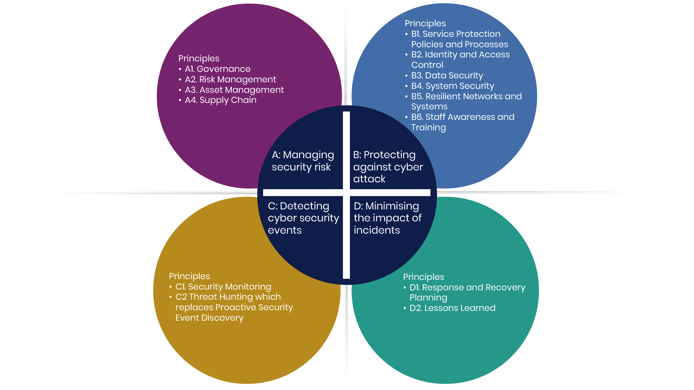

No items match your search/filter.

Source: NCSC Cyber Assessment Framework v4.0 (Open Government Licence)
Backups export to your phone's Downloads/Files app — reopen them here after reinstalling or switching devices. PDF export opens the report in a new tab and tries to print it automatically — if nothing happens, use your browser's own Share/Print option on that tab.